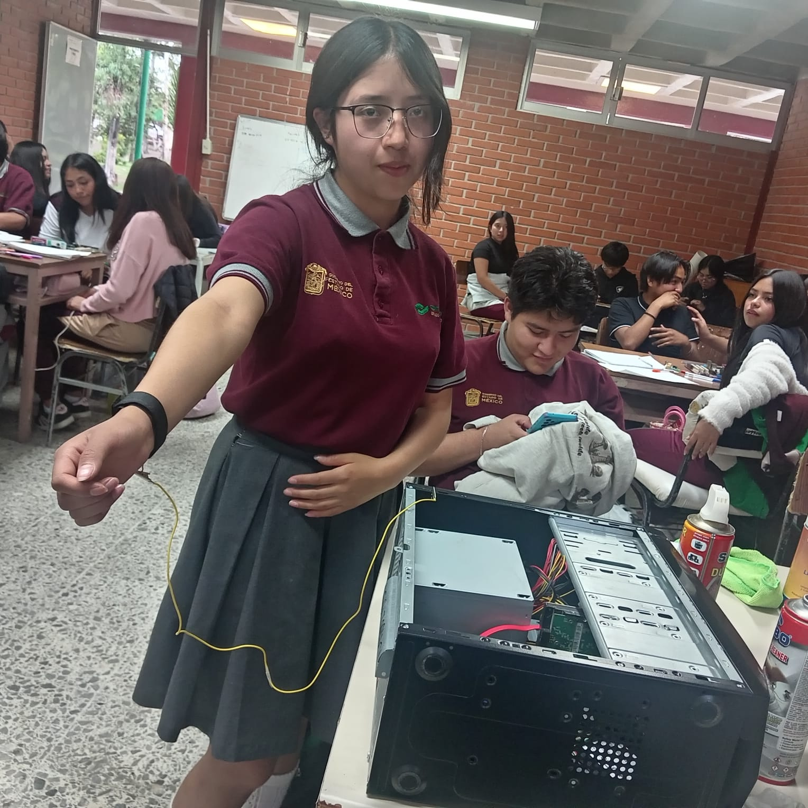
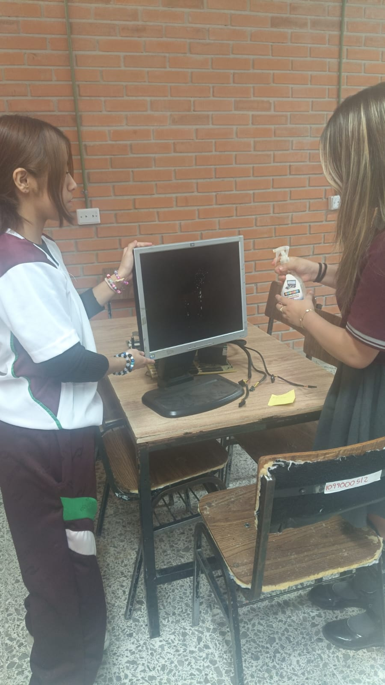

El mantenimiento correctivo en laptops consiste en reparar fallas que afectan su funcionamiento. Su objetivo es restablecer el rendimiento del equipo portátil mediante la reparación o sustitución de componentes dañados y la solución de problemas de software.
En las laptops, el mantenimiento correctivo es necesario cuando existen fallas como sobrecalentamiento, batería dañada, problemas de encendido, pantalla defectuosa, errores del sistema operativo, virus informáticos o fallas en el disco duro o memoria.

Detectar los problemas a tiempo en una laptop ayuda a evitar daños mayores en el hardware y el software. Un diagnóstico adecuado reduce costos de reparación y prolonga la vida útil del equipo portátil.
El proceso inicia con el diagnóstico del problema en la laptop, seguido de la reparación o sustitución de piezas dañadas como batería, disco duro o teclado. También incluye la eliminación de virus, reinstalación del sistema operativo y pruebas de funcionamiento para asegurar que el equipo opere correctamente.
El mantenimiento correctivo en laptops permite recuperar su funcionamiento, mejorar el rendimiento, restaurar el sistema operativo y proteger la información del usuario. Además, ayuda a identificar fallas críticas que requieren atención inmediata.

Aunque el mantenimiento correctivo soluciona problemas existentes, es recomendable complementarlo con mantenimiento preventivo para reducir fallas y mantener la laptop en óptimas condiciones.